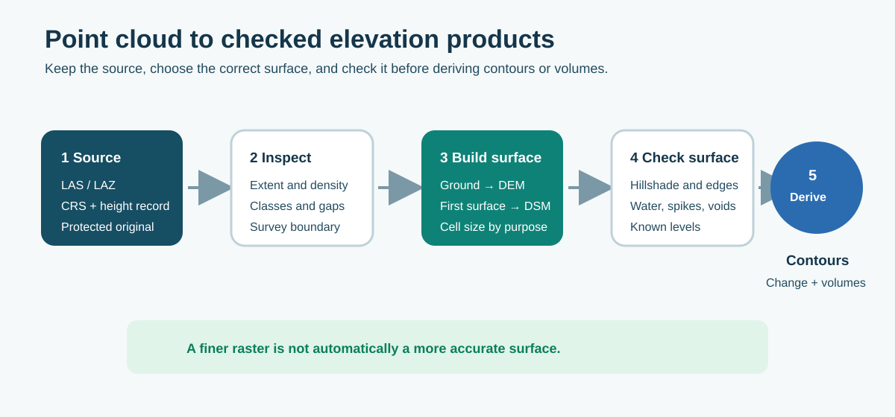
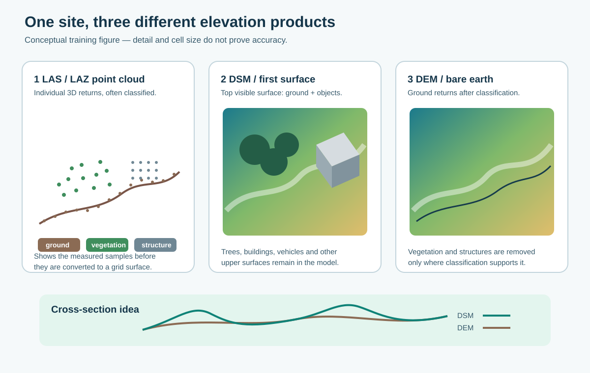
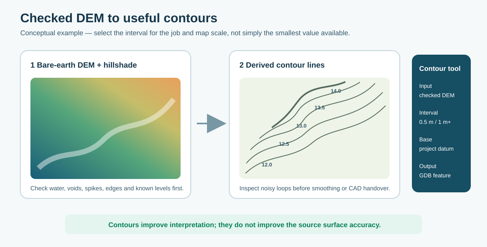

9. ArcGIS Pro elevation products
9.1 LAS or point cloud to DEM/DSM

Figure 21. Keep the source point cloud, create the surface needed for the job, then check it before deriving contours or volumes.

Figure 22. Conceptual products from one site: the point cloud is the measured 3D sample, the DSM represents the upper visible surface, and the bare-earth DEM represents classified ground.
- Create or add a LAS dataset and calculate its statistics/pyramid where required.
- Confirm the coordinate system, units, extent, point density and classification.
- Apply the correct point filter:
| Product | Typical points used | What it represents |
|---|---|---|
| DEM / bare-earth model | Classified ground, commonly class 2 | Ground surface after vegetation/buildings have been excluded where classification supports that. |
| DSM / first-surface model | Suitable first/high returns | Trees, structures and other upper surfaces as well as ground. |
- Clip processing to the real survey/study boundary. Esri recommends a boundary to prevent interpolation beyond the data and to improve performance.
- Run LAS Dataset To Raster using elevation as the value field. Choose binning or triangulation deliberately; triangulation honours more surface constraints but is slower.
- Set a cell size that is supported by the point spacing and output purpose. Do not create a very fine raster merely because the software allows it.
- Save a floating-point GeoTIFF or geodatabase raster where elevation precision must be retained.
- Check a hillshade, gaps, spikes, water, vegetation leakage, edges and known levels before use.
Proposed BOPRC starting points: use 0.5 m cells for suitable small, dense engineering sites and 1 m for wider general sites. Confirm from the actual point spacing, terrain and project requirement.
For context, the national LINZ 1 m DEM is specified at approximately ±0.20 m vertical and ±1.0 m horizontal at 95% confidence. A local low-altitude L2 survey can be denser, newer and potentially more accurate, but cell size and appearance do not prove that. Use the project's independent checks.
9.2 Generate contours
Use contours for interpretation and drawing support after the DEM has passed its surface checks.

Figure 23. Generate contours from the checked bare-earth surface, then inspect the lines before presentation or CAD handover.
| Parameter | Starting point | Check |
|---|---|---|
| Input | Checked bare-earth DEM | Do not contour a DSM by mistake. |
| Interval | 0.5 m for suitable detailed sites; 1 m or more for wider sites | Choose for purpose and map scale; smaller is not automatically better. |
| Base contour | Project datum/appropriate base | Confirm vertical datum and units. |
| Output | Geodatabase feature class | Retain the source DEM and processing record. |
Inspect contours for noisy vegetation remnants, water-edge artefacts, pits, spikes and unrealistic loops. Smoothing may improve presentation but must not hide data problems or be treated as improved survey accuracy.